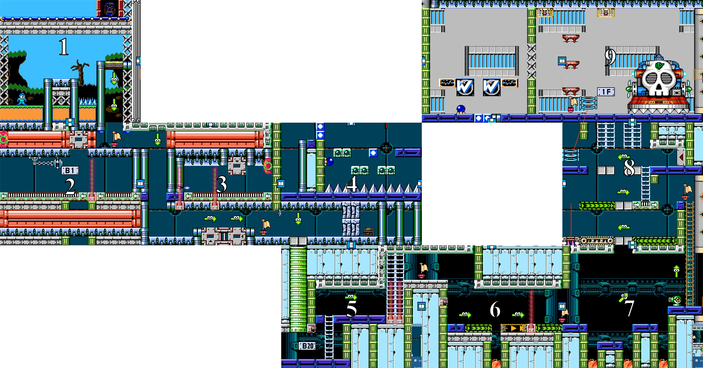
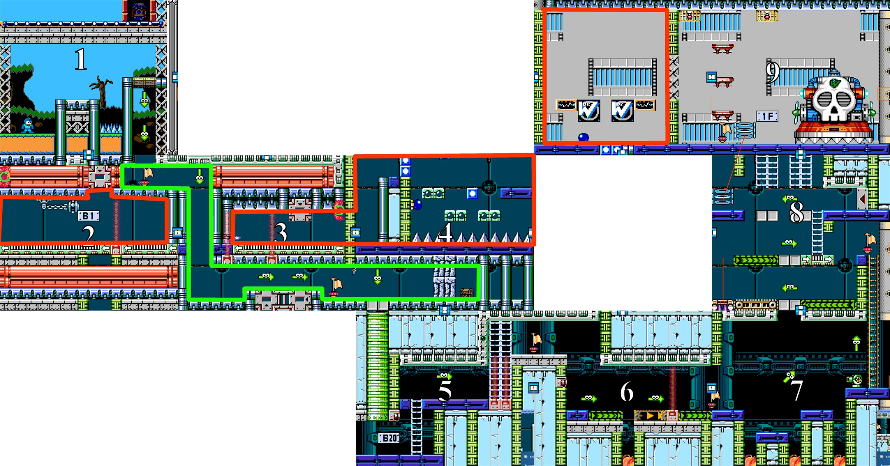
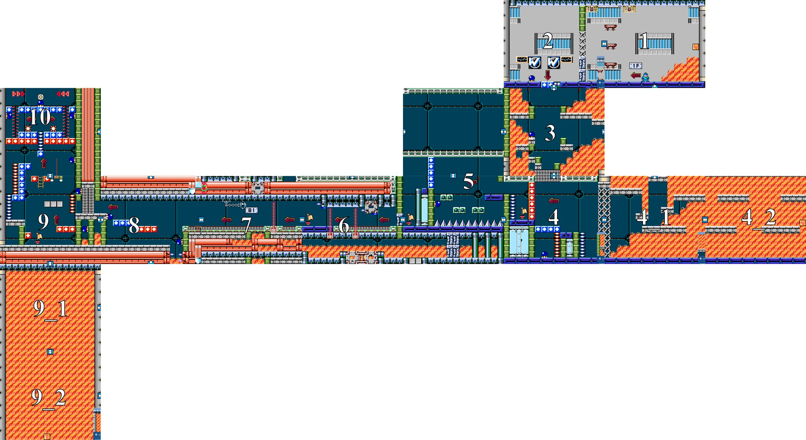
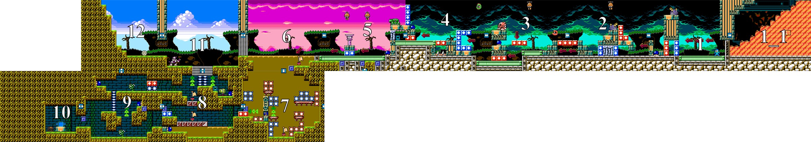

<div id="ajax-page" class="ajax-page-content">
    <div class="ajax-page-wrapper">
        <div class="ajax-page-nav">
            <div class="nav-item ajax-page-prev-next">
                <a class="ajax-page-load" href="project-4koma.html"><i class="lnr lnr-chevron-left"></i></a>
                <a class="ajax-page-load" href="project-cat-cafe.html"><i class="lnr lnr-chevron-right"></i></a>
            </div>
            <div class="nav-item ajax-page-close-button">
                <a id="ajax-page-close-button" href="#"><i class="lnr lnr-cross"></i></a>
            </div>
        </div>

        <div class="ajax-page-title">
            <h1>This Is How You Do It</h1>
            <p class="ajax-page-subtitle">Infiltration (Level 1) | Escape (Level 2) | Extraction (Level 3)</p>
        </div>

        <div class="row">
            <div class="col-sm-8 col-md-8 portfolio-block">
                <h4 class="portfolio-page-video-title">Level 1: Infiltration</h4>
                <div class="portfolio-page-video embed-responsive embed-responsive-16by9">
                    <video class="embed-responsive-item" controls preload="metadata" poster="img/portfolio/m2/infiltration-poster.jpg">
                        <source src="media/m2-infiltration.mp4" type="video/mp4">
                    </video>
                </div>
                <p class="portfolio-page-caption portfolio-video-credit"><i class="fas fa-film"></i> Edited by Jason Teo</p>
                <h4 class="portfolio-page-video-title">Level 2: Escape</h4>
                <div class="portfolio-page-video embed-responsive embed-responsive-16by9">
                    <video class="embed-responsive-item" controls preload="metadata" poster="img/portfolio/m2/escape-poster.jpg">
                        <source src="media/m2-escape.mp4" type="video/mp4">
                    </video>
                </div>
                <p class="portfolio-page-caption portfolio-video-credit"><i class="fas fa-film"></i> Edited by Jason Teo</p>
                <h4 class="portfolio-page-video-title">Level 3: Extraction</h4>
                <div class="portfolio-page-video embed-responsive embed-responsive-16by9">
                    <video class="embed-responsive-item" controls preload="metadata" poster="img/portfolio/m2/extraction-poster.jpg">
                        <source src="media/m2-extraction.mp4" type="video/mp4">
                    </video>
                </div>
                <p class="portfolio-page-caption portfolio-video-credit"><i class="fas fa-film"></i> Edited by Jason Teo</p>
                <div class="owl-carousel portfolio-page-carousel">
                    <div class="item">
                        <a class="lightbox" href="img/portfolio/m2/infiltration.jpg" title="Full Map of Infiltration (Level 1)"></a>
                        <p class="portfolio-page-caption">Full Map of Infiltration (Level 1)</p>
                    </div>
                    <div class="item">
                        <a class="lightbox" href="img/portfolio/m2/infiltration-highlight.jpg" title="Full Map of Infiltration Highlighted. Red: Foreshadowed areas for level 2. Green: Gameplay path"></a>
                        <p class="portfolio-page-caption">Full Map of Infiltration Highlighted. Red: Foreshadowed areas for level 2. Green: Gameplay path</p>
                    </div>
                    <div class="item">
                        <a class="lightbox" href="img/portfolio/m2/escape.jpg" title="Full Map of Escape (Level 2)"></a>
                        <p class="portfolio-page-caption">Full Map of Escape (Level 2)</p>
                    </div>
                    <div class="item">
                        <a class="lightbox" href="img/portfolio/m2/extraction.jpg" title="Full Map of Extraction (Level 3)"></a>
                        <p class="portfolio-page-caption">Full Map of Extraction (Level 3)</p>
                    </div>
                </div>

                <script type="text/javascript">
                    jQuery(document).ready(function($){
                        $('.portfolio-page-carousel').imagesLoaded(function(){
                            $('.portfolio-page-carousel').owlCarousel({
                                smartSpeed:1200,
                                items: 1,
                                loop: false,
                                dots: true,
                                nav: true,
                                navText: false,
                                margin: 10,
                                autoHeight:true
                            });
                        });
                    });
                </script>

                <!-- About the Project -->
                <div class="project-overview">
                    <div class="block-title">
                        <h3>About the Project</h3>
                    </div>
                    <p class="text-justify"><strong>Infiltration (Level 1)</strong><br>This design was meant to show a path where Mega Man is infiltrating from the ceiling and into the pipe system. Room 2 is not really used for gameplay, rather just used for foreshadowing a room in a later level.</p>
                    <p class="text-justify"><strong>Escape (Level 2)</strong><br>The firewall exists and is always chasing the player this level. Extensions (Rooms 4_1, 4_2, 9_1, 9_2) are made to give more time before the arrival of the wall of fire. The cadence seems repetitive, but due to the nature of puzzles and added pressure of an incoming firewall, mechanics are kept at their basics wherever possible with a difference of placement.</p>
                    <p class="text-justify"><strong>Extraction [Escape p.t 2] (Level 3)</strong><br>The firewall is fast and requires fast thinking for the player. It will be placed in every cadence until room 6. An optional room lets the player collect a new weapon for the boss.</p>
                </div>
            </div>

            <div class="col-sm-4 col-md-4 portfolio-block">
                <!-- Project Info -->
                <div class="project-description">
                    <div class="block-title">
                        <h3>Project Info</h3>
                    </div>
                    <ul class="project-general-info">
                        <li><p><i class="fa fa-gamepad"></i> 2D platformer, 3 levels</p></li>
                        <li><p><i class="fa fa-user"></i> Level design</p></li>
                        <li><p><i class="fa fa-cube"></i> Mega Man Maker</p></li>
                    </ul>

                    <div class="tags-block">
                        <div class="block-title">
                            <h3>Skills &amp; Tools</h3>
                        </div>
                        <ul class="tags">
                            <li><a>Mega Man Maker</a></li>
                            <li><a>Campaign Structure</a></li>
                            <li><a>Foreshadowing</a></li>
                            <li><a>Cadence</a></li>
                            <li><a>Intensity Charting</a></li>
                            <li><a>Video Editing</a></li>
                        </ul>
                    </div>
                    <div class="project-links">
                        <a class="btn-primary" href="files/M2_Infiltration_JasonTeo.pdf" target="_blank" rel="noopener"><i class="far fa-file-pdf"></i> Level 1: Infiltration</a>
                        <a class="btn-primary" href="files/M2_Escape_JasonTeo.pdf" target="_blank" rel="noopener"><i class="far fa-file-pdf"></i> Level 2: Escape</a>
                        <a class="btn-primary" href="files/M2_Extraction_JasonTeo.pdf" target="_blank" rel="noopener"><i class="far fa-file-pdf"></i> Level 3: Extraction</a>
                    </div>
                </div>
                <!-- /Project Info -->
            </div>
        </div>
    </div>
</div>